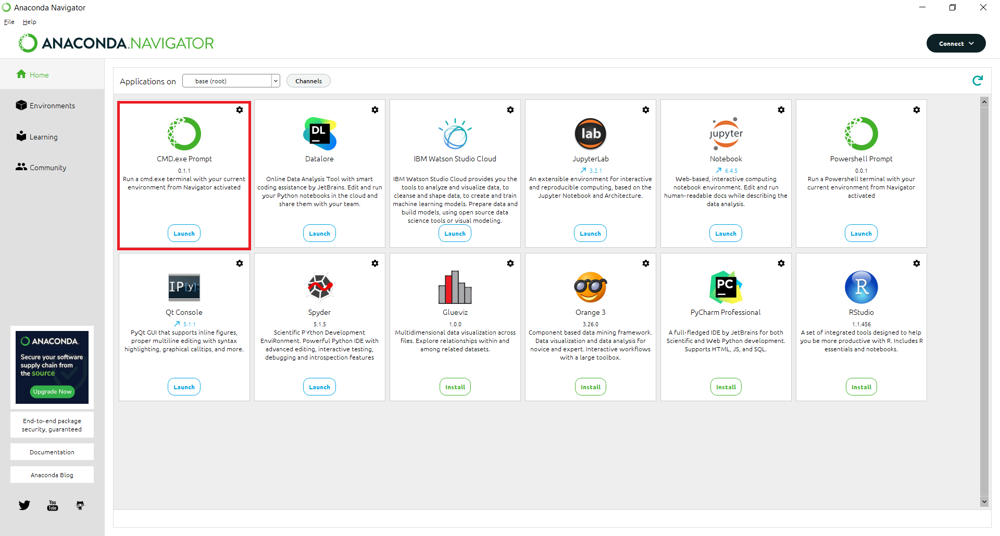
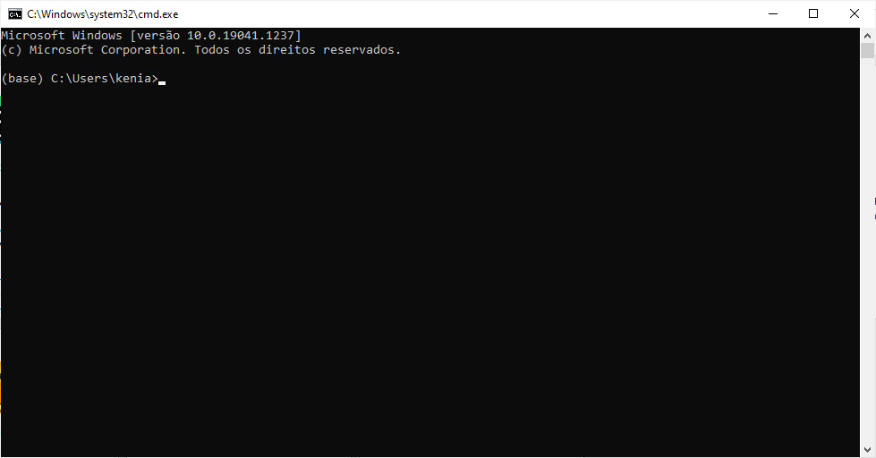

7. Data Frames
7.1. Definição
Em síntese, um data frame consiste em uma tabela de dados capaz de armazenar diferentes classes de dados nas suas colunas.
Para ver um exemplo de data frame, podemos usar os dados do livro Introdução à Econometria: uma abordagem moderna de autoria de Jeffrey M. Wooldridge.
Para tal, precisamos instalar o pacote wooldridge.
Uma forma de instalar é utilizando o Jupyter Notebook (ou o Google Colaboratory) e digitando o comando:
!pip install wooldridge
Ou, com a plataforma Anaconda aberta, abra o prompt de comando, clicando no botão Launch em CMD.exe Prompt, como mostra a figura abaixo:
Abrirá uma janela, como abaixo:
Nessa janela utilize o comando:
pip install wooldridge
Oberve que na janela de comando não há o símbolo de exclamação no início!
Após digitar o comando, pressione enter.
Observação:
Mais informações sobre a instalação e o conteúdo desse pacote pode ser encontradas aqui.
De volta ao Jupyter Notebook, para acessar o pacote, precisamos usar o seguinte comando:
[1]:
import wooldridge as wd
O pacote contém vários dados.
Como exemplo, faça leitura da base de dados wage1 com a função wd.data()(observe que wd foi a sigla utilizada quando importamos os dados do pacote wooldridge):
[2]:
wage1 = wd.data('wage1')
Para ver os dados:
[3]:
wage1
[3]:
| wage | educ | exper | tenure | nonwhite | female | married | numdep | smsa | northcen | ... | trcommpu | trade | services | profserv | profocc | clerocc | servocc | lwage | expersq | tenursq | |
|---|---|---|---|---|---|---|---|---|---|---|---|---|---|---|---|---|---|---|---|---|---|
| 0 | 3.10 | 11 | 2 | 0 | 0 | 1 | 0 | 2 | 1 | 0 | ... | 0 | 0 | 0 | 0 | 0 | 0 | 0 | 1.131402 | 4 | 0 |
| 1 | 3.24 | 12 | 22 | 2 | 0 | 1 | 1 | 3 | 1 | 0 | ... | 0 | 0 | 1 | 0 | 0 | 0 | 1 | 1.175573 | 484 | 4 |
| 2 | 3.00 | 11 | 2 | 0 | 0 | 0 | 0 | 2 | 0 | 0 | ... | 0 | 1 | 0 | 0 | 0 | 0 | 0 | 1.098612 | 4 | 0 |
| 3 | 6.00 | 8 | 44 | 28 | 0 | 0 | 1 | 0 | 1 | 0 | ... | 0 | 0 | 0 | 0 | 0 | 1 | 0 | 1.791759 | 1936 | 784 |
| 4 | 5.30 | 12 | 7 | 2 | 0 | 0 | 1 | 1 | 0 | 0 | ... | 0 | 0 | 0 | 0 | 0 | 0 | 0 | 1.667707 | 49 | 4 |
| ... | ... | ... | ... | ... | ... | ... | ... | ... | ... | ... | ... | ... | ... | ... | ... | ... | ... | ... | ... | ... | ... |
| 521 | 15.00 | 16 | 14 | 2 | 0 | 1 | 1 | 2 | 0 | 0 | ... | 0 | 0 | 0 | 1 | 1 | 0 | 0 | 2.708050 | 196 | 4 |
| 522 | 2.27 | 10 | 2 | 0 | 0 | 1 | 0 | 3 | 0 | 0 | ... | 0 | 1 | 0 | 0 | 1 | 0 | 0 | 0.819780 | 4 | 0 |
| 523 | 4.67 | 15 | 13 | 18 | 0 | 0 | 1 | 3 | 0 | 0 | ... | 0 | 0 | 0 | 0 | 1 | 0 | 0 | 1.541159 | 169 | 324 |
| 524 | 11.56 | 16 | 5 | 1 | 0 | 0 | 1 | 0 | 0 | 0 | ... | 0 | 0 | 0 | 0 | 0 | 0 | 0 | 2.447551 | 25 | 1 |
| 525 | 3.50 | 14 | 5 | 4 | 1 | 1 | 0 | 2 | 0 | 0 | ... | 0 | 0 | 0 | 1 | 0 | 1 | 0 | 1.252763 | 25 | 16 |
526 rows × 24 columns
Observe que a primeira coluna indica o número da observação (esse número é chamado de índice - index - dos dados), e a primeira linha refere-se ao nome das variáveis.
No total (contando a primeira linha e a primeira coluna), a base de dados conta com 526 linhas e 24 colunas.
Alternativamente, podemos acessar essa informação com o atributo shape:
[4]:
wage1.shape
[4]:
(526, 24)
Para visualizar o tipo de dado, podemos utilizar a função type():
[5]:
type(wage1)
[5]:
pandas.core.frame.DataFrame
Para realizar algumas manipulações (transformações) e análises de dados, precisamos usar um pacote específico.
O Pandas é um pacote Python que permite realizar tais manipulações e análises de dados. Se você está utilizando Anaconda, o pacote já está instalado na sua máquina.
A saída acima, indica que você está usando um Data Frame desse pacote.
Para sabermos mais informações sobre os dados, podemos utilizar a função info():
[6]:
wage1.info()
<class 'pandas.core.frame.DataFrame'>
RangeIndex: 526 entries, 0 to 525
Data columns (total 24 columns):
# Column Non-Null Count Dtype
--- ------ -------------- -----
0 wage 526 non-null float64
1 educ 526 non-null int64
2 exper 526 non-null int64
3 tenure 526 non-null int64
4 nonwhite 526 non-null int64
5 female 526 non-null int64
6 married 526 non-null int64
7 numdep 526 non-null int64
8 smsa 526 non-null int64
9 northcen 526 non-null int64
10 south 526 non-null int64
11 west 526 non-null int64
12 construc 526 non-null int64
13 ndurman 526 non-null int64
14 trcommpu 526 non-null int64
15 trade 526 non-null int64
16 services 526 non-null int64
17 profserv 526 non-null int64
18 profocc 526 non-null int64
19 clerocc 526 non-null int64
20 servocc 526 non-null int64
21 lwage 526 non-null float64
22 expersq 526 non-null int64
23 tenursq 526 non-null int64
dtypes: float64(2), int64(22)
memory usage: 98.8 KB
A saída nos mostra todas as variáveis, a quantidadade de entradas não nulas e o tipo dos dados em cada coluna.
Uma forma rápida de acessar informações descritivas (número de observações, média, desvio padrão, mínimo, quantis e máximo) sobre cada variável é o uso da função describe():
[7]:
wage1.describe()
[7]:
| wage | educ | exper | tenure | nonwhite | female | married | numdep | smsa | northcen | ... | trcommpu | trade | services | profserv | profocc | clerocc | servocc | lwage | expersq | tenursq | |
|---|---|---|---|---|---|---|---|---|---|---|---|---|---|---|---|---|---|---|---|---|---|
| count | 526.000000 | 526.000000 | 526.00000 | 526.000000 | 526.000000 | 526.000000 | 526.000000 | 526.000000 | 526.000000 | 526.000000 | ... | 526.000000 | 526.000000 | 526.000000 | 526.000000 | 526.000000 | 526.000000 | 526.000000 | 526.000000 | 526.000000 | 526.000000 |
| mean | 5.896103 | 12.562738 | 17.01711 | 5.104563 | 0.102662 | 0.479087 | 0.608365 | 1.043726 | 0.722433 | 0.250951 | ... | 0.043726 | 0.287072 | 0.100760 | 0.258555 | 0.366920 | 0.167300 | 0.140684 | 1.623268 | 473.435361 | 78.150190 |
| std | 3.693086 | 2.769022 | 13.57216 | 7.224462 | 0.303805 | 0.500038 | 0.488580 | 1.261891 | 0.448225 | 0.433973 | ... | 0.204680 | 0.452826 | 0.301298 | 0.438257 | 0.482423 | 0.373599 | 0.348027 | 0.531538 | 616.044772 | 199.434664 |
| min | 0.530000 | 0.000000 | 1.00000 | 0.000000 | 0.000000 | 0.000000 | 0.000000 | 0.000000 | 0.000000 | 0.000000 | ... | 0.000000 | 0.000000 | 0.000000 | 0.000000 | 0.000000 | 0.000000 | 0.000000 | -0.634878 | 1.000000 | 0.000000 |
| 25% | 3.330000 | 12.000000 | 5.00000 | 0.000000 | 0.000000 | 0.000000 | 0.000000 | 0.000000 | 0.000000 | 0.000000 | ... | 0.000000 | 0.000000 | 0.000000 | 0.000000 | 0.000000 | 0.000000 | 0.000000 | 1.202972 | 25.000000 | 0.000000 |
| 50% | 4.650000 | 12.000000 | 13.50000 | 2.000000 | 0.000000 | 0.000000 | 1.000000 | 1.000000 | 1.000000 | 0.000000 | ... | 0.000000 | 0.000000 | 0.000000 | 0.000000 | 0.000000 | 0.000000 | 0.000000 | 1.536867 | 182.500000 | 4.000000 |
| 75% | 6.880000 | 14.000000 | 26.00000 | 7.000000 | 0.000000 | 1.000000 | 1.000000 | 2.000000 | 1.000000 | 0.750000 | ... | 0.000000 | 1.000000 | 0.000000 | 1.000000 | 1.000000 | 0.000000 | 0.000000 | 1.928619 | 676.000000 | 49.000000 |
| max | 24.980000 | 18.000000 | 51.00000 | 44.000000 | 1.000000 | 1.000000 | 1.000000 | 6.000000 | 1.000000 | 1.000000 | ... | 1.000000 | 1.000000 | 1.000000 | 1.000000 | 1.000000 | 1.000000 | 1.000000 | 3.218076 | 2601.000000 | 1936.000000 |
8 rows × 24 columns
7.2. Selecionando informações em um Data Frame
Existem diversas formas para selecionar partes de um Data Frame.
Por exemplo, para selecionar a segunda linha da terceira coluna da data frame wage1, podemos usar o método iloc:
[8]:
wage1.iloc[1, 2]
[8]:
22
Observação:
Um método se refere a uma função que é parte de uma classe. Nesse caso, iloc é um método que está ligado a objetos do tipo Data Frame. Uma função pode ser utilizada em qualquer instancia ou objeto de qualquer classe. Assim, todos os métodos são funções, mas nem todas funções são métodos.
Fonte: datacamp
Lembre-se que a indexação em Python começa em zero. Logo, a segunda linha tem índice 1, a terceira coluna tem índice 2, e assim por diante.
De forma equivalente, podemos utilizar o nome da coluna, por meio do método loc:
[9]:
wage1.loc[1, 'exper']
[9]:
22
Para selecionar somente as colunas “wage” e “educ” pelo nome, podemos usar:
[10]:
wage1.loc[1, ['wage', 'educ']]
[10]:
wage 3.24
educ 12.00
Name: 1, dtype: float64
Podemos selecionar todas as informações de uma variável. Por exemplo, para selecionar apenas a variável educ do data frame, podemos usar a seguinte sintaxe:
[11]:
wage1[['educ']]
[11]:
| educ | |
|---|---|
| 0 | 11 |
| 1 | 12 |
| 2 | 11 |
| 3 | 8 |
| 4 | 12 |
| ... | ... |
| 521 | 16 |
| 522 | 10 |
| 523 | 15 |
| 524 | 16 |
| 525 | 14 |
526 rows × 1 columns
Observe que utilizamos colchetes duas vezes. Isso porque, estamos criando uma lista de colunas a serem selecionadas do banco de dados. O resultado é um subconjunto, que também possui o formato de data frame. Você pode selecionar quantas colunas desejar.
Podemos utilizar algum critério lógico para selecionar as linhas. Por exemplo, suponha que você queira observar apenas pessoas com mais de 30 anos de experiência no trabalho. Nesse caso, você utilizar o seguinte comando:
[12]:
wage1[wage1["tenure"]>30]
[12]:
| wage | educ | exper | tenure | nonwhite | female | married | numdep | smsa | northcen | ... | trcommpu | trade | services | profserv | profocc | clerocc | servocc | lwage | expersq | tenursq | |
|---|---|---|---|---|---|---|---|---|---|---|---|---|---|---|---|---|---|---|---|---|---|
| 73 | 2.91 | 12 | 20 | 34 | 0 | 1 | 1 | 2 | 1 | 0 | ... | 0 | 0 | 1 | 0 | 0 | 1 | 0 | 1.068153 | 400 | 1156 |
| 91 | 11.76 | 14 | 40 | 39 | 0 | 0 | 1 | 0 | 1 | 0 | ... | 1 | 0 | 0 | 0 | 1 | 0 | 0 | 2.464704 | 1600 | 1521 |
| 264 | 8.75 | 12 | 47 | 44 | 0 | 0 | 1 | 0 | 0 | 0 | ... | 0 | 0 | 0 | 0 | 0 | 0 | 0 | 2.169054 | 2209 | 1936 |
| 306 | 6.25 | 11 | 35 | 31 | 0 | 0 | 1 | 0 | 1 | 0 | ... | 0 | 1 | 0 | 0 | 0 | 0 | 0 | 1.832582 | 1225 | 961 |
| 342 | 15.00 | 11 | 35 | 31 | 0 | 0 | 1 | 0 | 0 | 0 | ... | 0 | 0 | 0 | 0 | 0 | 0 | 0 | 2.708050 | 1225 | 961 |
| 457 | 6.50 | 14 | 41 | 33 | 0 | 0 | 1 | 0 | 1 | 1 | ... | 0 | 1 | 0 | 0 | 1 | 0 | 0 | 1.871802 | 1681 | 1089 |
6 rows × 24 columns
Observe que esse comando tem duas partes. Dentro do colchete estamos utilizando um operador lógico que indicara True ou False em cada linha. Depois, estamos pedindo para selecionar apenas True.
Para que fique mais claro, observe o que ocorre quando usamos apenas o comando que está dentro dos colchetes:
[13]:
wage1["tenure"]>30
[13]:
0 False
1 False
2 False
3 False
4 False
...
521 False
522 False
523 False
524 False
525 False
Name: tenure, Length: 526, dtype: bool
Temos uma lista de booleanos, informando se para cada linha é válido que a experiência é maior do que 30. Ou seja, quando colocamos o comando completo (wage1[wage1["tenure"]>30]) estamos selecionando as linhas do Data Frame wage1 para as quais ([wage1["tenure"]>30]) é verdadeiro.
Outras três funções muito usadas em data frames são: head()(para visualizar as primeiras 5 linhas da base de dados) e tail() (para visualizar as últimas 5 linhas da base de dados).
[14]:
wage1.head()
[14]:
| wage | educ | exper | tenure | nonwhite | female | married | numdep | smsa | northcen | ... | trcommpu | trade | services | profserv | profocc | clerocc | servocc | lwage | expersq | tenursq | |
|---|---|---|---|---|---|---|---|---|---|---|---|---|---|---|---|---|---|---|---|---|---|
| 0 | 3.10 | 11 | 2 | 0 | 0 | 1 | 0 | 2 | 1 | 0 | ... | 0 | 0 | 0 | 0 | 0 | 0 | 0 | 1.131402 | 4 | 0 |
| 1 | 3.24 | 12 | 22 | 2 | 0 | 1 | 1 | 3 | 1 | 0 | ... | 0 | 0 | 1 | 0 | 0 | 0 | 1 | 1.175573 | 484 | 4 |
| 2 | 3.00 | 11 | 2 | 0 | 0 | 0 | 0 | 2 | 0 | 0 | ... | 0 | 1 | 0 | 0 | 0 | 0 | 0 | 1.098612 | 4 | 0 |
| 3 | 6.00 | 8 | 44 | 28 | 0 | 0 | 1 | 0 | 1 | 0 | ... | 0 | 0 | 0 | 0 | 0 | 1 | 0 | 1.791759 | 1936 | 784 |
| 4 | 5.30 | 12 | 7 | 2 | 0 | 0 | 1 | 1 | 0 | 0 | ... | 0 | 0 | 0 | 0 | 0 | 0 | 0 | 1.667707 | 49 | 4 |
5 rows × 24 columns
[15]:
wage1.tail()
[15]:
| wage | educ | exper | tenure | nonwhite | female | married | numdep | smsa | northcen | ... | trcommpu | trade | services | profserv | profocc | clerocc | servocc | lwage | expersq | tenursq | |
|---|---|---|---|---|---|---|---|---|---|---|---|---|---|---|---|---|---|---|---|---|---|
| 521 | 15.00 | 16 | 14 | 2 | 0 | 1 | 1 | 2 | 0 | 0 | ... | 0 | 0 | 0 | 1 | 1 | 0 | 0 | 2.708050 | 196 | 4 |
| 522 | 2.27 | 10 | 2 | 0 | 0 | 1 | 0 | 3 | 0 | 0 | ... | 0 | 1 | 0 | 0 | 1 | 0 | 0 | 0.819780 | 4 | 0 |
| 523 | 4.67 | 15 | 13 | 18 | 0 | 0 | 1 | 3 | 0 | 0 | ... | 0 | 0 | 0 | 0 | 1 | 0 | 0 | 1.541159 | 169 | 324 |
| 524 | 11.56 | 16 | 5 | 1 | 0 | 0 | 1 | 0 | 0 | 0 | ... | 0 | 0 | 0 | 0 | 0 | 0 | 0 | 2.447551 | 25 | 1 |
| 525 | 3.50 | 14 | 5 | 4 | 1 | 1 | 0 | 2 | 0 | 0 | ... | 0 | 0 | 0 | 1 | 0 | 1 | 0 | 1.252763 | 25 | 16 |
5 rows × 24 columns
7.3. Importação de dados
Para Data Frames, a leitura, manipulação e exportação de diversos formatos de dados (CSV, XLS, XLSX, TXT, DTA, entre outros) pode ser feita utilizando o pandas.
Inicialmente, você precisará importar o pandas com o seguinte comando:
[16]:
import pandas as pd
7.3.1. Arquivos CSV
Como exemplo, vamos usar a Base de Dados do Comércio Exterior Brasileiro (Comex Stat) disponibilizada pelo Governo Federal (Ministério da Economia) em www.gov.br. Você pode baixar os dados e salvar no seu diretório de trabalho.
Nos exemplos abaixo, vamos usar a base de dados de Exportações detalhada por NCM (Nomenclatura Comum do Mercosul) para o ano 2019.
Observação:
Os dados também estão disponíveis AQUI em zip. Extraia os dados no seu diretório de trabalho!
O arquivo CSV disponibilizado no Comex Stat utiliza separador ponto e vírgula (;) e apresenta o seguinte detalhamento:
Ano
Mês
Código NCM
Código da unidade estatística
Código de país de destino/origem do produto
Código da UF de origem/destino do produto
Código da via de transporte
Código da URF de embarque/desembarque
Quantidade estatística
Quilograma líquido
Valor dólar FOB (US$)
Para importar os dados, podemos usar a função pd.read_csv() do pacote pandas. Para tal, vamos criar um objeto dexp (dados de exportações) da seguinte forma:
[17]:
dexp = pd.read_csv("EXP_2019.csv", sep=';')
[18]:
dexp.head()
[18]:
| CO_ANO | CO_MES | CO_NCM | CO_UNID | CO_PAIS | SG_UF_NCM | CO_VIA | CO_URF | QT_ESTAT | KG_LIQUIDO | VL_FOB | |
|---|---|---|---|---|---|---|---|---|---|---|---|
| 0 | 2019 | 12 | 70193900 | 10 | 97 | SP | 7 | 147600 | 0 | 0 | 24 |
| 1 | 2019 | 12 | 85444200 | 10 | 63 | SP | 4 | 817700 | 99 | 96 | 9299 |
| 2 | 2019 | 12 | 84099111 | 11 | 493 | SP | 4 | 817600 | 2 | 2 | 63 |
| 3 | 2019 | 12 | 87087090 | 11 | 493 | SP | 4 | 817700 | 15 | 231 | 908 |
| 4 | 2019 | 12 | 32041990 | 10 | 586 | SC | 7 | 147800 | 1200 | 1200 | 26494 |
Lembrete:
Para verificar os argumentos da função, basta usar o help: help(pd.read_csv)
Para verificar o tamanho da base de dados podemos utilizar o método shape:
[19]:
dexp.shape
[19]:
(1393174, 11)
Os dados contam com 1.416.884 linhas e 11 colunas.
Atenção:
Vamos trabalhar com essa base de dados também na Seção 7.4 - Manipulação de dados.
7.3.2. Arquivos XLS e XLSX
Assim como o caso do CSV, vamos usar o pandas para ler o arquivo em Excel.
Como exemplo, faça o download do arquivo EXP2019_ComexStat AQUI.
Observação:
Após fazer o download, salve o arquivo XLSX no seu diretório de trabalho.
Para importar os dados, podemos usar a função pd.read_excel. Para tal, especifique um objeto dados com:
[20]:
dados = pd.read_excel("EXP2019_ComexStat.xlsx")
Novamente, podemos verificar a base, digitando seu nome:
[21]:
dados
[21]:
| ano | uf | exp | |
|---|---|---|---|
| 0 | 2019 | AC | 0.032853 |
| 1 | 2019 | AL | 0.319089 |
| 2 | 2019 | AM | 0.731092 |
| 3 | 2019 | AP | 0.261368 |
| 4 | 2019 | BA | 8.168158 |
| 5 | 2019 | CE | 2.275188 |
| 6 | 2019 | DF | 0.160701 |
| 7 | 2019 | ES | 8.800322 |
| 8 | 2019 | GO | 7.133398 |
| 9 | 2019 | MA | 3.543623 |
| 10 | 2019 | MG | 25.138579 |
| 11 | 2019 | MS | 5.243446 |
| 12 | 2019 | MT | 17.206104 |
| 13 | 2019 | ND | 1.937193 |
| 14 | 2019 | PA | 17.841239 |
| 15 | 2019 | PB | 0.126299 |
| 16 | 2019 | PE | 1.466347 |
| 17 | 2019 | PI | 0.542833 |
| 18 | 2019 | PR | 16.454197 |
| 19 | 2019 | RJ | 28.634459 |
| 20 | 2019 | RN | 0.394853 |
| 21 | 2019 | RO | 1.303910 |
| 22 | 2019 | RR | 0.157707 |
| 23 | 2019 | RS | 18.545065 |
| 24 | 2019 | SC | 8.951839 |
| 25 | 2019 | SE | 0.050561 |
| 26 | 2019 | SP | 48.852560 |
| 27 | 2019 | TO | 1.110499 |
Ou, verificar o tamanho, com o atributo shape:
[22]:
dados.shape
[22]:
(28, 3)
Na próxima seção, faremos alterações nessa base de dados.
7.4. Manipulação de dados
Conforme destacado acima, a base de dados de exportações conta com muitas observações e variáveis. Vamos usar o pandas para manipular os dados, como por exemplo, selecionar, criar e renomear variáveis, filtrar observações, etc.
Para iniciar, vamos visualizar novamente a base de dados dexp da seção anterior (se você está no mesmo notebook e já importou os dodos, não é necessário importar novamente).
Observe os nomes das colunas (variáveis).
[23]:
dexp
[23]:
| CO_ANO | CO_MES | CO_NCM | CO_UNID | CO_PAIS | SG_UF_NCM | CO_VIA | CO_URF | QT_ESTAT | KG_LIQUIDO | VL_FOB | |
|---|---|---|---|---|---|---|---|---|---|---|---|
| 0 | 2019 | 12 | 70193900 | 10 | 97 | SP | 7 | 147600 | 0 | 0 | 24 |
| 1 | 2019 | 12 | 85444200 | 10 | 63 | SP | 4 | 817700 | 99 | 96 | 9299 |
| 2 | 2019 | 12 | 84099111 | 11 | 493 | SP | 4 | 817600 | 2 | 2 | 63 |
| 3 | 2019 | 12 | 87087090 | 11 | 493 | SP | 4 | 817700 | 15 | 231 | 908 |
| 4 | 2019 | 12 | 32041990 | 10 | 586 | SC | 7 | 147800 | 1200 | 1200 | 26494 |
| ... | ... | ... | ... | ... | ... | ... | ... | ... | ... | ... | ... |
| 1393169 | 2019 | 10 | 65050019 | 10 | 589 | SP | 4 | 817700 | 300 | 300 | 861 |
| 1393170 | 2019 | 10 | 20059900 | 10 | 815 | RS | 1 | 927800 | 40210 | 40210 | 29975 |
| 1393171 | 2019 | 10 | 40093100 | 10 | 161 | SP | 4 | 817700 | 0 | 0 | 2 |
| 1393172 | 2019 | 10 | 7108000 | 10 | 573 | ES | 1 | 727600 | 13 | 13 | 46 |
| 1393173 | 2019 | 10 | 94036000 | 11 | 87 | SC | 4 | 817700 | 10 | 405 | 290 |
1393174 rows × 11 columns
Alternativamente, confira os nomes das colunas com o atributo colunms:
[24]:
dexp.columns
[24]:
Index(['CO_ANO', 'CO_MES', 'CO_NCM', 'CO_UNID', 'CO_PAIS', 'SG_UF_NCM',
'CO_VIA', 'CO_URF', 'QT_ESTAT', 'KG_LIQUIDO', 'VL_FOB'],
dtype='object')
Observação:
AQUI, você encontra um guia rápido do pandas, escrito pelo pessoal do Data Camp.
Vejamos algumas manipulações muito utilizadas em bancos de dados:
7.4.1. Selecionar variáveis
Para selecionar apenas algumas variáveis, podemos criar um novo objeto dexp_mod especificado a partir da seleção de algumas variáveis da base original, como Ano (“CO_ANO”), Mês (“CO_MES”), UF (“SG_UF_NCM”) e Valor FOB (“VL_FOB”):
[25]:
dexp_mod = dexp[["CO_ANO", "CO_MES", "SG_UF_NCM", "VL_FOB"]]
Para verificar a nova base, podemos utilizar o método head()
[26]:
dexp_mod.head()
[26]:
| CO_ANO | CO_MES | SG_UF_NCM | VL_FOB | |
|---|---|---|---|---|
| 0 | 2019 | 12 | SP | 24 |
| 1 | 2019 | 12 | SP | 9299 |
| 2 | 2019 | 12 | SP | 63 |
| 3 | 2019 | 12 | SP | 908 |
| 4 | 2019 | 12 | SC | 26494 |
7.4.2. Renomear variáveis
Para renomear as variáveis, podemos usar o método rename().
Por exemplo, para renomear “CO_ANO” como “ano”, “CO_MES” como “mes”, “SG_UF_NCM” como “uf” e “VL_FOB” como “exp” na base de dados dexp_mod, o seguinte código pode ser usado:
[27]:
dexp_mod = dexp_mod.rename(
columns={
"CO_ANO":"ano",
"CO_MES":"mes",
"SG_UF_NCM":"uf",
"VL_FOB":"exp"
}
)
Observe que a nova base de dados tem o mesmo nome que a anterior. Se você abrir o objeto dexp_mod, as variáveis estarão com os novos nomes.
Observação:
O que está dentro dos colchetes é um dicionário, o que também é uma estrutura de dados em Python. Basicamente, um dicionário é uma correspondência. Para mais informações acesse: https://docs.python.org/3/tutorial/datastructures.html#dictionaries
7.4.3. Modificar dados
Para criar o log de uma variável, precisamos utilizar o pacote numpy que será importado com a abreviação np:
[28]:
import numpy as np
Para criar o log de uma variável, precisamos utilizar a função np.log() do numpy, diretamente sobre a coluna selecionada. Por exemplo, para obtermos o log do valor das exportações e salvá-la com o nome log_exp, podemos utilizar o seguinte código:
[29]:
dexp_mod["log_exp"] = np.log(dexp_mod["exp"])
C:\Users\kenia\anaconda3\lib\site-packages\pandas\core\arraylike.py:397: RuntimeWarning: divide by zero encountered in log
result = getattr(ufunc, method)(*inputs, **kwargs)
Observe que a mensagem de warning indica que existem logs de zero, o que resulta em um número indefinido. Você pode organizar o banco de dados por exportações, e verificar que quando as exportações são zero, o resultado é -inf:
[30]:
dexp_mod.sort_values("exp")
[30]:
| ano | mes | uf | exp | log_exp | |
|---|---|---|---|---|---|
| 1054934 | 2019 | 9 | SP | 0 | -inf |
| 890669 | 2019 | 1 | SP | 0 | -inf |
| 164536 | 2019 | 4 | SC | 0 | -inf |
| 1140392 | 2019 | 12 | PR | 0 | -inf |
| 55192 | 2019 | 4 | RS | 0 | -inf |
| ... | ... | ... | ... | ... | ... |
| 720860 | 2019 | 11 | PA | 734708540 | 20.414984 |
| 879091 | 2019 | 9 | PA | 870210045 | 20.584245 |
| 450799 | 2019 | 4 | RJ | 967127923 | 20.689841 |
| 546053 | 2019 | 8 | PA | 1093983387 | 20.813091 |
| 1132686 | 2019 | 7 | PA | 1193313692 | 20.900000 |
1393174 rows × 5 columns
Podemos também transformar o valor US$ FOB das exportações em bilhões com a divisão:
[31]:
dexp_mod["exp"] = (dexp_mod["exp"]/1000000000)
Observe que nesse caso, estamos substituindo a variável exp pelo valor em bilhões:
[32]:
dexp_mod.head()
[32]:
| ano | mes | uf | exp | log_exp | |
|---|---|---|---|---|---|
| 0 | 2019 | 12 | SP | 2.400000e-08 | 3.178054 |
| 1 | 2019 | 12 | SP | 9.299000e-06 | 9.137662 |
| 2 | 2019 | 12 | SP | 6.300000e-08 | 4.143135 |
| 3 | 2019 | 12 | SP | 9.080000e-07 | 6.811244 |
| 4 | 2019 | 12 | SC | 2.649400e-05 | 10.184674 |
7.4.4. Agrupar e agregar dados
Para agrupar a base de dados, podemos utilizar o método groupby() do pandas, combinado com outras funções. Por exemplo, podemos obter a soma da variável de exportações, agrupada por ano e UF:
[33]:
dexp_mod.groupby(["ano","uf"], as_index=False)["exp"].sum()
[33]:
| ano | uf | exp | |
|---|---|---|---|
| 0 | 2019 | AC | 0.032853 |
| 1 | 2019 | AL | 0.319089 |
| 2 | 2019 | AM | 0.731093 |
| 3 | 2019 | AP | 0.261368 |
| 4 | 2019 | BA | 8.162484 |
| 5 | 2019 | CE | 2.275193 |
| 6 | 2019 | DF | 0.160701 |
| 7 | 2019 | ES | 7.105386 |
| 8 | 2019 | GO | 7.133399 |
| 9 | 2019 | MA | 3.543623 |
| 10 | 2019 | MG | 25.138590 |
| 11 | 2019 | MS | 5.243447 |
| 12 | 2019 | MT | 17.206105 |
| 13 | 2019 | ND | 1.937193 |
| 14 | 2019 | PA | 17.841241 |
| 15 | 2019 | PB | 0.126300 |
| 16 | 2019 | PE | 1.466346 |
| 17 | 2019 | PI | 0.542833 |
| 18 | 2019 | PR | 16.403308 |
| 19 | 2019 | RJ | 27.624210 |
| 20 | 2019 | RN | 0.394854 |
| 21 | 2019 | RO | 1.303910 |
| 22 | 2019 | RR | 0.157707 |
| 23 | 2019 | RS | 17.256958 |
| 24 | 2019 | SC | 8.951856 |
| 25 | 2019 | SE | 0.050562 |
| 26 | 2019 | SP | 48.645702 |
| 27 | 2019 | TO | 1.110498 |
Observação:
Repare que utilizamos o argumento as_index=False ao usar o método groupby. Isso porque, quando não utilizamos esse argumento, [“ano”,“uf”] serão considerados índices da nova série criada. Ao deixar as_index=False, estamos mantendo o índice como uma sequência numérica.
Podemos ainda utilizar várias estatísticas ao mesmo tempo (por exemplo, soma, mínimo e máximo), utilizando o método agg():
[34]:
dexp_mod.groupby(["ano","uf"], as_index=False)["exp"].agg([sum, min, max])
[34]:
| sum | min | max | ||
|---|---|---|---|---|
| ano | uf | |||
| 2019 | AC | 0.032853 | 9.000000e-09 | 0.000954 |
| AL | 0.319089 | 0.000000e+00 | 0.021772 | |
| AM | 0.731093 | 0.000000e+00 | 0.013352 | |
| AP | 0.261368 | 1.000000e-09 | 0.018698 | |
| BA | 8.162484 | 0.000000e+00 | 0.153340 | |
| CE | 2.275193 | 0.000000e+00 | 0.113706 | |
| DF | 0.160701 | 0.000000e+00 | 0.006417 | |
| ES | 7.105386 | 0.000000e+00 | 0.129798 | |
| GO | 7.133399 | 0.000000e+00 | 0.161175 | |
| MA | 3.543623 | 0.000000e+00 | 0.118354 | |
| MG | 25.138590 | 0.000000e+00 | 0.304937 | |
| MS | 5.243447 | 0.000000e+00 | 0.152393 | |
| MT | 17.206105 | 0.000000e+00 | 0.491826 | |
| ND | 1.937193 | 6.000000e-08 | 0.085973 | |
| PA | 17.841241 | 0.000000e+00 | 1.193314 | |
| PB | 0.126300 | 0.000000e+00 | 0.003244 | |
| PE | 1.466346 | 0.000000e+00 | 0.043024 | |
| PI | 0.542833 | 0.000000e+00 | 0.056123 | |
| PR | 16.403308 | 0.000000e+00 | 0.281062 | |
| RJ | 27.624210 | 0.000000e+00 | 0.967128 | |
| RN | 0.394854 | 0.000000e+00 | 0.025583 | |
| RO | 1.303910 | 7.000000e-09 | 0.027731 | |
| RR | 0.157707 | 1.000000e-09 | 0.012068 | |
| RS | 17.256958 | 0.000000e+00 | 0.579854 | |
| SC | 8.951856 | 0.000000e+00 | 0.065901 | |
| SE | 0.050562 | 0.000000e+00 | 0.002872 | |
| SP | 48.645702 | 0.000000e+00 | 0.259384 | |
| TO | 1.110498 | 0.000000e+00 | 0.091234 |
7.5. Exportação de dados
Podemos utilizar o pandas para exportar dados para diversos formatos como CSV e XLSX.
Vamos retomar a base de dados modificada anteriormente, e salvar os dados somados de exportação por UF com o nome tabela:
[35]:
tabela = dexp_mod.groupby(["ano","uf"], as_index=False).sum()
Esses dados serão salvos em CSV e XLS.
7.5.1. Dados em CSV
Suponha que você queira exportar a tabela com dados agregados das exportações por UF e ano.
Nesse caso, podemos usar, por exemplo, a função to_csv() do pacote pandas:
[36]:
tabela.to_csv('Exp_UF_2019v.csv')
Observe que a base de dados foi salva no seu diretório de trabalho. Se você abrir o arquivo CSV, irá observar que os dados estão separados por vírgula. A função to_csv() utiliza vírgula (,) como separador padrão.
Para mudar o separador para ponto e vírgula (;), precisamos indicar no argumento sep da função:
[37]:
tabela.to_csv('Exp_UF_2019pv.csv', sep=';')
De forma alternativa, se quisermos salvar a tabela apenas externamente, podemos encadear os dois códigos, usando:
[38]:
dexp_mod.groupby(["ano","uf"], as_index=False).sum().to_csv('Exp_UF_2019pv.csv', sep=';')
Lembre-se, você pode tirar suas dúvidas sobre as funções com a função help:
help(pd.DataFrame.to_csv)
7.5.2. Dados em XLSX
Para exportar para excel, podmeos usar a função to_excel() do pacote pandas:
[39]:
tabela.to_excel('Exp_UF_2019.xlsx', sheet_name = "2019")
Observe que o argumento sheet_name, escreve 2019 no nome da aba do excel. Esse é um argumento opcional do método, que será muito útil principalmente quando você precisar salvar várias abas no mesmo arquivo.
Atenção:
O pacote pandas possui diversas outras opções para ler e escrever dados, que podem ser conferidas em: https://pandas.pydata.org/docs/reference/io.html.